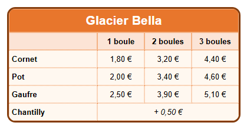

Parcours d'apprentissage › Leçon 4
Bordures et coins arrondis

Deux sortes de bordures
- La bordure autour de tout le tableau se règle dans l'onglet
 Tableau (T) : Couleur de bordure,
Épaisseur de bordure, Style de bordure et Rayon de bordure (plus le nombre est grand, plus les coins sont ronds).
Tableau (T) : Couleur de bordure,
Épaisseur de bordure, Style de bordure et Rayon de bordure (plus le nombre est grand, plus les coins sont ronds). - Les lignes entre les cellules : choisissez leur épaisseur avec Épaisseur des lignes (onglet Tableau). Choisissez le style
par cellule avec Style de bordure dans l'onglet
 Cellule (C) :
aucune, continue, tirets, pointillés ou double.
Cellule (C) :
aucune, continue, tirets, pointillés ou double.
À vous de jouer
- Créez un tableau de 4 colonnes et 6 lignes. Fusionnez les cellules de la ligne du haut (voir leçon 3) et tapez le nom du glacier.
- Complétez les formules (cornet, pot, gaufre) et les prix, et mettez l'en-tête en forme comme à la leçon 2.
- Dans l'onglet Tableau, choisissez le brun foncé comme Couleur de bordure et réglez l'Épaisseur de bordure sur 3.
- Réglez le Rayon de bordure sur 14 : les coins du tableau deviennent ronds.
- Sélectionnez les cellules des formules et des prix (faites glisser la souris dessus) et, dans l'onglet Cellule, choisissez pointillés comme Style de bordure.
- Regardez le résultat dans le navigateur de test.
Une bordure adaptée
Une bordure aide à lire le tableau, mais trop de lignes le rendent chargé. Utilisez une bordure épaisse autour du tableau et des lignes fines ou claires à l'intérieur. Choisissez une couleur de bordure assortie à la couleur de l'en-tête.
Exercice
Donnez au tableau une bordure double au lieu d'une bordure continue. Réglez ensuite le Rayon des cellules sur 6 et regardez ce qui change dans le navigateur de test.
Solution
Dans l'onglet Tableau, choisissez double comme Style de bordure. Une bordure double a besoin d'épaisseur : laissez l'Épaisseur de bordure sur 3 ou plus. Avec le Rayon des cellules, chaque cellule reçoit ses propres coins arrondis : les cellules ressemblent à de petits boutons.
Vous travaillez sous Linux ? Ouvrez alors l'exemple vous-même avec Ouvrir le concepteur de tableau : dossier
lessen/fr, fichier les04-prijslijst.htd.